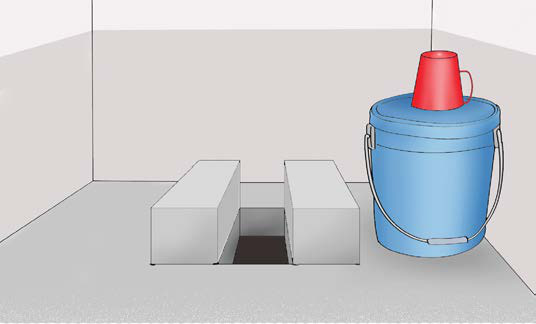
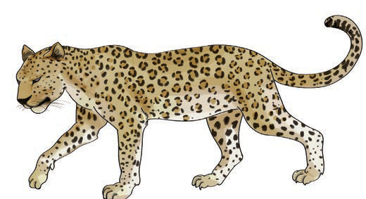

8. Tunga sentensi kwa kutumia maneno haya.
- chai
- choma
- chafu
- chaki
- kucha
- cheza
- chupa
- choo
10. Soma sentensi hizi:
Ugali umechacha.
Chausiku amechukua chupa zake.
Kucha chafu ni hatari.
Mika amepika chakula kibichi.
11. Soma maneno yaliyopo chini ya picha hizi:

choo

chui